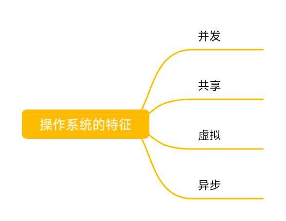
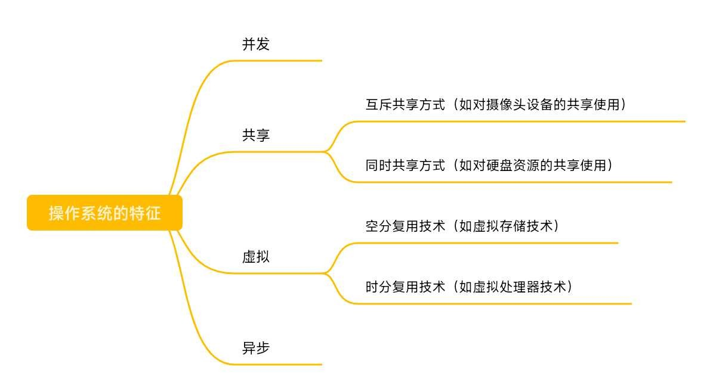

操作系统的特征
对《操作系统》的知识梳理 二
零、总览
并发和共享是两个最基本的特征，二者互为存在条件。
一、并发
并发：指两个或多个事件在同一时间间隔内发生。这些事件宏观上是同时发生的，但是微观上是交替发生的。
常考易混淆概念 并行：指两个或多个事件在同一时刻发生。
操作系统的并发性指计算机系统中“同时”运行着多个程序，这些程序宏观上看是同时运行着的，微观上看是交替运行的。
操作系统就是伴随着“多道程序技术”而出现的。因此，操作系统和程序并发是一起诞生的。注意：单核CPU同一时刻只能执行一个程序，各个程序只能并发地执行；多核CPU同一时刻可以同时执行多个程序，多个程序可以并行地执行。比如，Intel的第八代 i-3 处理器就是4核CPU，意味着可以并行地执行4个程序。
比如，CPU中运行着微信、QQ、Word和Chrome，但是此时如果有第五个程序也想运行，比如说QQ音乐。我们就必须剥夺其中的某一个程序它对CPU的使用权，比如说我们把Word这个程序换下CPU，让QQ音乐这个程序上CPU运行，然后Word和QQ音乐交替使用CPU。总之，对于四核CPU来说，同一时刻只能同时执行四个程序，要有四个以上的程序“同时”运行的话，那么并发性依然是必不可少的，因此，并发性是操作系统的一个基本的特性。
二、共享
共享即资源共享，是指系统中的资源可供内存中多个并发执行的进程共同使用。
资源共享有两种方式，一种是互斥共享方式，一种是同时共享方式。
1.互斥共享方式
系统中的某些资源，虽然可以提供给多个进程使用，但一个时间段内只允许一个进程访问该资源。例如：使用QQ和微信视频，同一时间内摄像头只能分配给其中一个进程。
2.同时共享方式
系统中的某些资源，允许一个时间段内由多个进程“同时”对它们进行访问。所谓的同时，往往是宏观上的，而在微观上，这些进程可能是交替地对该资源进行访问（即分时共享）。例如：使用QQ发送文件A，同时使用微信发送文件B。宏观上看，两边都在同时读取并发送文件，说明两个进程都在访问硬盘资源，从中读取数据。微观上看，两个进程是交替着访问硬盘的。再比如，边玩游戏时边听歌，扬声器这个声音输出设备在宏观上是两边都在使用，微观上也是两边同时使用的。
三、并发和共享的关系
并发性指计算机系统中同时存在着多个运行着的程序。
共享性是指系统中的资源可供内存中多个并发执行的进程共同使用。
通过以下例子来看并发和共享的关系：使用QQ发送文件A，同时使用微信发送文件B。两个进程正在并发执行（并发性），需要共享地访问硬盘资源（共享性）。如果失去并发性，则系统中只有一个程序正在运行，则共享性失去存在的意义；如果失去共享性，则QQ和微信不能同时访问硬盘资源，就无法实现同时发送文件，也就无法并发。因此，并发性和共享性是互为存在条件的。
四、虚拟
虚拟是指把一个物理上的实体变为若干个逻辑上的对应物。物理实体（前者）是实际存在的，而逻辑上对应物（后者）是用户感受到的。
1.虚拟技术——空分复用技术
背景知识：一个程序需要放入内存并给它分配CPU才能执行。用一个例子来理解：GTA5需要4GB的运行内存，QQ需要256MB的内存，网易云音乐需要256MB的内存……而电脑是4GB的内存（物理实体），这些程序同时运行需要的内存远大于4GB，那么为什么它们还可以在电脑上同时运行呢？这就是虚拟存储器技术（空分复用技术），实际只有4GB内存，但是在用户看来似乎远大于4GB。
2.虚拟技术——时分复用技术
另一个例子，在某单核CPU的计算机中，用户打开了QQ、Chorme、QQ音乐、迅雷……，为什么单核CPU的电脑中能同时运行这么多个程序呢？这就是虚拟处理器技术（时分复用技术），实际上只有一个单核CPU，但是在用户看来似乎有多个CPU在同时为自己服务。
显然，如果失去了并发性，则一个时间段内系统中只需运行一道程序，那么就失去了实现虚拟性的意义了，因此，没有并发性就谈不上虚拟性。
五、异步
异步是指，在多道程序环境下，允许多个程序并发执行，但由于资源有限，进程的执行不是一贯到底的，而是走走停停，以不可预知的速度向前推进，这就是进程的异步性。
比如，当正在执行的进程提出某种资源请求时，如打印请求，而此时打印机正在为其他某进程打印，由于打印机属于临界资源，因此正在执行的进程必须等待，且放弃处理机，直到打印机空闲，并再次把处理机分配给该进程时，该进程方能继续执行。可见，由于资源等因素的限制，进程的执行通常都不是“一气呵成”，而是以“停停走走”的方式运行。是程序并发执行时，程序之间的相互制约关系导致了并发程序这种“执行——暂停——执行”这种间断性的活动规律。
如果失去了并发性，即系统只能串行地运行各个程序，那么每个程序的执行会一贯到底，只有系统拥有并发性，才有可能导致异步性。
六、总结
没有并发和共享，就谈不上虚拟和异步，因此并发和共享是操作系统的两个最基本的特征。
